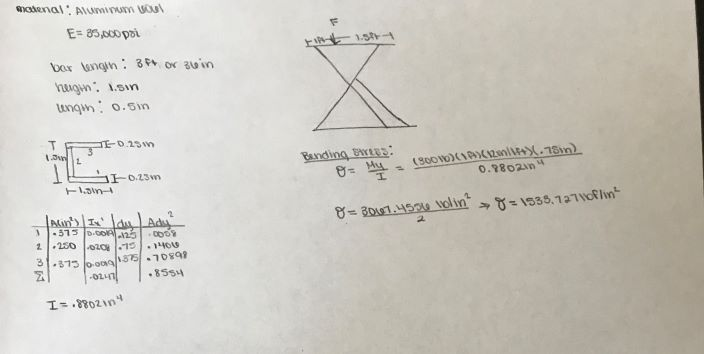
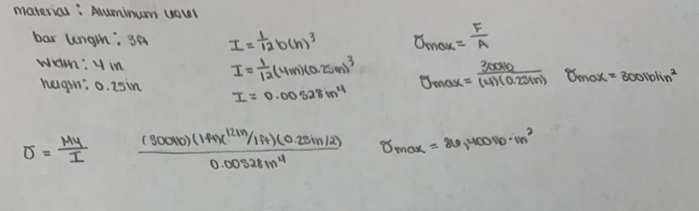
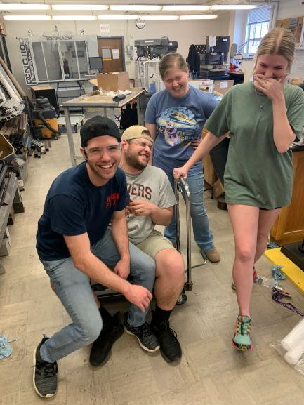

Assisted stand-up device
Contents |
Abstract
The purpose of this project is to design and build a machine to help a caregiver assist a large man up from the floor. Below you will find information which pertains to the process and thinking behind our final product.
Team members
- (L to R) Nathaniel Stewart, Akram Mikhail, Jamie Strader, Macy Grissom
- We'd also like to thank Dr. Canfield, Lisa Meadows, Jeff, and Dr. Nabors
Problem Statement/overview of the need
A man with limited mobility and frequent falls due to brain cancer has a caregiver with a strained back. Caregiver requested a device to lift him into a raised seated position from the ground.
Design Specifications
- Must support up to 300 lbs
- Must easily slide under man
- Must raise to height equal to caregiver's hips
- Must be operated using little to no effort on the caregiver's part
- Must be lightweight and portable
- Must be reliable in operation
- Must be safe
Background research
1. What exists already, similar products 2. availability 3. identify gaps in existing products or technology to be addressed
- Most assistive devices require the use of the fallen person's forearm strength in order to sit upright.
- Most devices already on the market have a initial height too tall to slide under the person.
- Devices already on the market are very expensive. They range from $700 to $2000.
Conceptual Design
Summarize your conceptual design process. Develop at least three concepts.
Design Concept 1
- Concept one is similar to an air mattress in that it blows up to elevate the person sitting on it.
Design Concept 2
- Design concept 2 is based off of a swing-type design
Design Concept 3
- This design is based off of a combination of the above concept designs.
Evaluate concepts/select candidate
| Concept 1 | Concept 2 | Concept 3 | |
|---|---|---|---|
| Caregiver Safety | 3 | 1 | 2 |
| Subject Safety | 2 | 1 | 3 |
| Reliability | 2 | 1 | 3 |
| Mobility | 1 | 2 | 3 |
- Concept 3 is the best option due to the decision matrix shown above. It requires little to no effort on the caregivers part, the subject will be safely transported onto device, it's the least error or malfunction prone, and allows for the most mobility.
Detailed Design
Description of selected design
After several considered designs, we carefully selected one that we felt had the most pros. We went with a scissor lift design, with added modifications to make it safe for a person. We added a lazy susan to the seat to allow for lateral to axial positioning. Our materials were selected with weight and yield strength in consideration. A foldable seat and removable steering mechanism allow for portability and easy storage. We decided on a linear actuator to control raised height with remote control key fobs to allow the caregiver to easily choose the desired height.
Analysis
Describe three types of analysis to be performed on the design
Engineering analysis 1
Statics Analysis 
Engineering analysis 2
Engineering analysis 3
Material Analysis and Bending Stress 
CAD Drawings
Bill of Materials
qty, item, description, source, part number, price
| Item No. | Quantity | Part Number | Source | Description | Price |
|---|---|---|---|---|---|
| 1 | 1 piece | 1797K21 | McMaster-Carr | 90 degree turntable | $9.92 |
| 2 | 1 piece | FA-PA-12V-12A | Firgelli Automation | 12V Power Adaptor | $48.00 |
| 3 | 1 piece | 2CH-REM | Firgelli Automation | Remote Control System | $55.00 |
| 4 | 2 pieces | MB1-P | Firgelli Automation | Mounting Bracket Package | $16.00 |
| 5 | 1 piece | FA-400-12-X-P | Firgelli Automation | Linear Actuator | $139.99 |
| 6 | 4 pieces | 8975K514 | McMaster-Carr | 60-61 Aluminum Bar | $109.72 |
| 7 | 10 pieces | 3750K1 | McMaster-Carr | Bearings | $20.20 |
| 8 | 2 pieces | 89015K34 | McMaster-Carr | Aluminum Plate | $389.46 |
| 9 | 2 pieces | 89015K14 | McMaster-Carr | Aluminum Plate 12-12 | $27.28 |
| 10 | 2 pieces | 6831K12 | McMaster-Carr | Shaft Mount Track Roller | $43.66 |
| 11 | 1 pack (10 pieces) | 93286A054 | McMaster-Carr | 0.08-0.1" thick washers for a 5/8" screw | $6.10 |
|} TOTAL PROPOSED PRICE: $859.23
Assembly Instructions
When assembling our original design, we ran into durability and safety issues. Due to this, we shifted to a model using a pre-made scissor lift and opted to make detachable rails and a ramp for it. Our rails are user-friendly, allowing the operator to detach any rail needed to load the user onto the machine, and easily reattach them for safe use. Our ramp will compensate for the higher than desirable starting height.
Fabrication Process
Testing and implementation
 weight testing with a bit of fun :)
The family hopes to use this to create a safe way for both the user and caregiver to lift user from ground when falls happen.
Photos of Completed design
Instructions for safe use
Do not use the device unless supervised by an adult that fully understands the safe use of this product. Do not operate until user is fully seated and all necessary rails are attached. User should not operate the machine himself, a caregiver should always operate.
Project Summary, Reflection
This project gave us all invaluable experience from designing to assembly. Prior to this, we all undervalued the amount of work and preparation that goes into creating machines such as these. We learned a great deal about each others strength and weaknesses. Being candid and honest is something that helped carry us through this project, as well as open communication. We also learned that designs aren't always capable of being fabricated, and flexibility is key to getting a project finished.